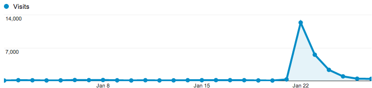
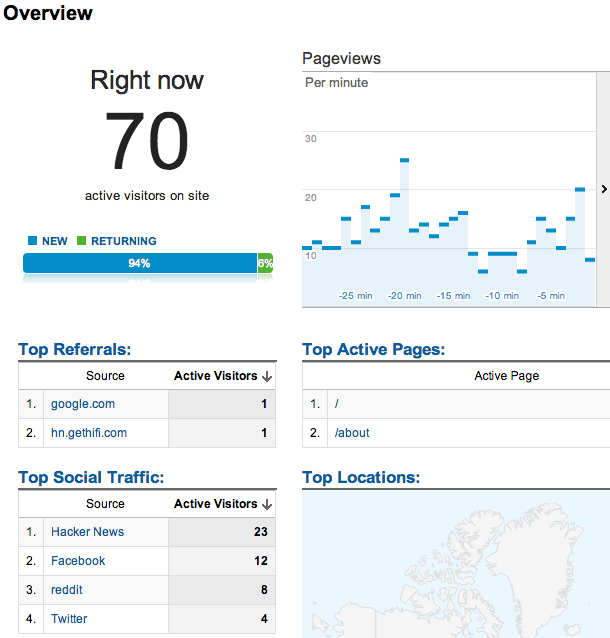

01.27.13
Posted in san francisco, web at 9:21 pm by danvk
After its recent update, OldSF got an unexpected surge of traffic after appearing on Hacker News and reddit San Francisco.
Traffic peaked at 14,000 visitors the day it hit Hacker News, then trailed off:

I particularly enjoyed the new “Live Analytics” feature on Google Analytics, which shows you who’s on your site right now:

In the end, 40% of our traffic came from Facebook, 39% from Hacker News, 10% from reddit, 7.5% from Twitter and 3% from Google+. In other words, things started on Hacker News but wound up spreading through other social media.
The traffic spike was exciting, but also a bit sad. OldSF is fundamentally a read-only site, which makes it hard to keep people coming back. Raven and I did some brainstorming and decided to start tweeting “pictures of the day” on @Old_SF. Please follow us!
Permalink
01.21.13
Posted in programming, san francisco, web at 7:21 pm by danvk
If you head over to oldsf.org, you’ll find a sleek new UI and a brand new slideshow feature. Here’s the before/after:


Locations like the Sutro Baths can have hundreds of photos. The slideshow lets you flip through them quickly.
As so often happens, what looked simple at first became more and more complex as I implemented it. Here’s how that process went for the OldSF update.
Read the rest of this entry »
Permalink
09.12.09
Posted in personal, san francisco at 10:07 am by danvk
On my way in to work Friday morning, I took a detour via the Marin Headlands:
It was a total whiteout on the Golden Gate Bridge, but as soon as I got to the north bay, it cleared right up. I went back into the fog for the ~800 foot climb up Hawk Hill before breaking through and getting some amazing views from the top:

I saw a fighter plane zoom into the city, which made me briefly think that it was Fleet Week. Not so! (It’s in October.)
The ride down the back side was misty, beautiful and frighteningly slick. All in all, I left at 7:40 and got into work with a change of clothes right around 10.
One more view from the top:

Permalink
06.14.09
Posted in san francisco at 3:26 pm by danvk
The analogy struck me when I saw the de Young Tower from the aptly-named Grand View Park. Maybe the resemblance isn’t quite so clear as it was in my mind.
Also, arcologies? Anyone want to hazard a guess what fraction of people familiar with the term learned about it from SimCity 2000? I’m going to say 99.
Permalink
05.25.09
Posted in personal, san francisco at 11:44 am by danvk
While walking around my block with an out-of-town friend the other day, I found myself pointing out all the restaurants I had never been to. How could I be so remiss? Part of it is the sheer number of food places: 40 within a three block radius.
Here they are. I’ve been to the bolded places. The links go to Yelp.
Within one block (3/4):
- Cafe du Soleil
- rotee (Indian)
- S&W Market
- Two Jack’s Seafood
Within two blocks (8/13):
- Chili Cha Cha’s Thai Food
- Cu Co’s Restaurant
- Estela’s Fresh Sandwiches
- Indian Oven
- Kate’s Kitchen
- Lo-Cost Meat and Fish Market
- Metro’s Caffe
- Nickie’s (bar)
- Roland’s Bakery
- Squat & Gobble
- Thep-Phnom (Thai)
- Three Twins Ice Cream
- Volare Pizza
Within three blocks (12/23):
- Abe’s Market
- Bistro St. Germaine
- Burger Meister
- Cafe International
- Castro Coffee
- Golden Natural Foods
- Hanabi Japanese Restaurant
- La Carreta Taqueria
- Love ‘n Haight Deli & Cafe
- Mad Dog in the Fog
- Memphis Minnie’s
- Molotov’s (bar)
- Mythic Pizza
- Naan and Chutney
- Noc-Noc (bar)
- O’Looney’s Market
- PeaCock Lounge (bar)
- Raja Cuisine
- Rosamunde (“the sausage place”)
- Tacqueria El Castillito
- Toronado (bar)
- Uva Enoteca
- Whole Foods Co
Now that I have a list, there’s no excuses!
Permalink
« Previous entries
Next Page »